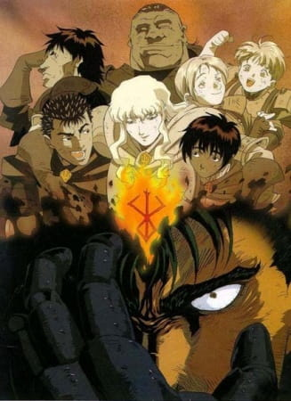
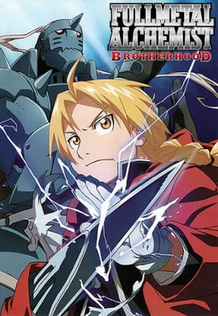

Anime to Watch - My Personal Recommendations
Cowboy Bepop

Rating: 10/10 - Masterpiece
Where to Watch: Crunchyroll, Hulu, Tubi
Crime is timeless. By the year 2071, humanity has expanded across the galaxy, filling the surface of other planets with settlements like those on Earth. These new societies are plagued by murder, drug use, and theft, and intergalactic outlaws are hunted by a growing number of tough bounty hunters.
Spike Spiegel and Jet Black pursue criminals throughout space to make a humble living. Beneath his goofy and aloof demeanor, Spike is haunted by the weight of his violent past. Meanwhile, Jet manages his own troubled memories while taking care of Spike and the Bebop, their ship. The duo is joined by the beautiful con artist Faye Valentine, odd child Edward Wong Hau Pepelu Tivrusky IV, and Ein, a bioengineered Welsh Corgi.
While developing bonds and working to catch a colorful cast of criminals, the Bebop crew's lives are disrupted by a menace from Spike's past. As a rival's maniacal plot continues to unravel, Spike must choose between life with his newfound family or revenge for his old wounds.
Monster

Rating: 10/10 - Masterpiece
Where to Watch: Netflix
Dr. Kenzou Tenma, an elite neurosurgeon recently engaged to his hospital director's daughter, is well on his way to ascending the hospital hierarchy. That is until one night, a seemingly small event changes Dr. Tenma's life forever. While preparing to perform surgery on someone, he gets a call from the hospital director telling him to switch patients and instead perform life-saving brain surgery on a famous performer. His fellow doctors, fiancée, and the hospital director applaud his accomplishment; but because of the switch, a poor immigrant worker is dead, causing Dr. Tenma to have a crisis of conscience.
So when a similar situation arises, Dr. Tenma stands his ground and chooses to perform surgery on the young boy Johan Liebert instead of the town's mayor. Unfortunately, this choice leads to serious ramifications for Dr. Tenma—losing his social standing being one of them. However, with the mysterious death of the director and two other doctors, Dr. Tenma's position is restored. With no evidence to convict him, he is released and goes on to attain the position of hospital director.
Nine years later when Dr. Tenma saves the life of a criminal, his past comes back to haunt him—once again, he comes face to face with the monster he operated on. He must now embark on a quest of pursuit to make amends for the havoc spread by the one he saved.
Berserk

Rating: 10/10 - Masterpiece
Where to Watch: Netflix [Movies], Crunchyroll & Amazon Prime [Show]
Guts, a man who will one day be known as the Black Swordsman, is a young traveling mercenary characterized by the large greatsword he carries. He accepts jobs that offer the most money, but he never stays with one group for long—until he encounters the Band of the Falcon. Ambushed after completing a job, Guts crushes many of its members in combat. Griffith, The Band of the Falcon's leader and founder, takes an interest in Guts and duels him. While the others are no match for Guts, Griffith defeats him in one blow.
Incapacitated and taken into the Band of the Falcon's camp to recover, Guts wakes up two days later. He confronts Griffith, and the two duel yet again, only this time with a condition: Guts will join the Band of the Falcon if he loses. Due to his fresh injuries, Guts loses the fight and is inducted by Griffith.
In three years' time, Guts has become one of the Band of the Falcon's commanders. On the battlefield, his combat prowess is second only to Griffith as he takes on large groups of enemies all on his own. With Guts' immense strength and Griffith's leadership, the Band of the Falcon dominate every battle they partake in. But something menacing lurks in the shadows, threatening to change Guts' life forever.
Initial D

Rating: 10/10 - Masterpiece
Where to Watch: Crunchyroll, Hulu, Amazon Prime
Unlike his friends, Takumi Fujiwara is not particularly interested in cars, with little to no knowledge about the world of car enthusiasts and street racers. The son of a tofu shop owner, he is tasked to deliver tofu every morning without fail, driving along the mountain of Akina. Thus, conversations regarding cars or driving in general would only remind Takumi of the tiring daily routine forced upon him.
One night, the Akagi Red Suns, an infamous team of street racers, visit the town of Akina to challenge the local mountain pass. Led by their two aces, Ryousuke and Keisuke Takahashi, the Red Suns plan to conquer every racing course in Kanto, establishing themselves as the fastest crew in the region. However, much to their disbelief, one of their aces is overtaken by an old Toyota AE86 during a drive back home from Akina. After the incident, the Takahashi brothers are cautious of a mysterious driver geared with remarkable technique and experience in the local roads—the AE86 of Mount Akina.
Samurai Champloo

Rating: 10/10 - Masterpiece
Where to Watch: Hulu & Amazon Prime
Fuu Kasumi is a young and clumsy waitress who spends her days peacefully working in a small teahouse. That is, until she accidentally spills a drink all over one of her customers! With a group of samurai now incessantly harassing her, Fuu desperately calls upon another samurai in the shop, Mugen, who quickly defeats them with his wild fighting technique, utilizing movements reminiscent to that of breakdancing. Unfortunately, Mugen decides to pick a fight with the unwilling ronin Jin, who wields a more precise and traditional style of swordfighting, and the latter proves to be a formidable opponent. The only problem is, they end up destroying the entire shop as well as accidentally killing the local magistrate's son.
For their crime, the two samurai are captured and set to be executed. However, they are rescued by Fuu, who hires the duo as her bodyguards. Though she no longer has a place to return to, the former waitress wishes to find a certain samurai who smells of sunflowers and enlists the help of the now exonerated pair to do so. Despite initially disapproving of this idea, the two eventually agree to assist the girl in her quest; thus, the trio embark upon an adventure to find this mysterious warrior—that is, if Fuu can keep Mugen and Jin from killing each other.
Set in an alternate Edo Period of Japan, Samurai Champloo follows the journey of these three eccentric individuals in an epic quest full of action, comedy, and dynamic sword fighting, all set to the beat of a unique hip-hop infused soundtrack.
Dragon Ball

Rating: 10/10 - Masterpiece
Where to Watch: Crunchyroll, Hulu, Amazon Prime
Goku is a young boy who lives in the woods all alone—that is, until a girl named Bulma runs into him in her search for a set of magical objects called the "Dragon Balls." Since the artifacts are said to grant one wish to whoever collects all seven, Bulma hopes to gather them and wish for a perfect boyfriend. Gokuu happens to be in possession of a dragon ball, but unfortunately for Bulma, he refuses to part ways with it, so she makes him a deal: he can tag along on her journey if he lets her borrow the dragon ball's power. With that, the two set off on the journey of a lifetime.
They don't go on the journey alone. On the way, they meet the old Muten-Roshi and wannabe disciple Kuririn, with whom Gokuu trains to become a stronger martial artist for the upcoming World Martial Arts Tournament. However, it's not all fun and games; the ability to make any wish come true is a powerful one, and there are others who would do much worse than just wishing for a boyfriend. To stop those who would try to abuse the legendary power, they train to become stronger fighters, using their newfound strength to help the people around them along the way.
Hajime no Ippo
Rating: 10/10 - Masterpiece (Highly Motivational)
Where to Watch: Crunchyroll & Amazon Prime
In his father's absence, teenager Ippo Makunouchi works hard to help his mother run her fishing boat rental business. Ippo's timid nature, his lack of sleep, and the sea smell make him an easy target for relentless bullies who leave him bruised and beaten on a daily basis. Mamoru Takamura, an up-and-coming boxer, rescues Ippo from a violent after-school incident and takes him back to the Kamogawa Boxing Gym for recovery. Takamura and his fellow boxers, Masaru Aoki and Tatsuya Kimura, are stunned by Ippo's powerful punches—a result of strong muscles developed through years serving his physically taxing family business.
Following brief training under Takamura, Ippo impresses the other boxers in a practice match against prodigy Ichirou Miyata. He gains a rival in Miyata and a coach in Genji Kamogawa, the gym owner and a former boxer himself. As Ippo takes the first steps in his official boxing career, he faces off against a series of challenging opponents, each more powerful than the last. Victory, loss, and a cycle of dedicated training await Ippo on his journey to achieve greatness. With his tough body and unstoppable fighting spirit, the kind young man seeks to take on the world.
Dragon Ball Z

Rating: 10/10 - Masterpiece
Where to Watch: Crunchyroll, Amazon Prime
Five years after winning the World Martial Arts tournament, Gokuu is now living a peaceful life with his wife and son. This changes, however, with the arrival of a mysterious enemy named Raditz who presents himself as Gokuu's long-lost brother. He reveals that Gokuu is a warrior from the once powerful but now virtually extinct Saiyan race, whose homeworld was completely annihilated. When he was sent to Earth as a baby, Gokuu's sole purpose was to conquer and destroy the planet; but after suffering amnesia from a head injury, his violent and savage nature changed, and instead was raised as a kind and well-mannered boy, now fighting to protect others.
With his failed attempt at forcibly recruiting Gokuu as an ally, Raditz warns Gokuu's friends of a new threat that's rapidly approaching Earth—one that could plunge Earth into an intergalactic conflict and cause the heavens themselves to shake. A war will be fought over the seven mystical dragon balls, and only the strongest will survive in Dragon Ball Z.
Death Note

Rating: 10/10 - Masterpiece
Where to Watch: Tubi, Pluto TV, Peacock, Amazon Prime, Netflix, Crunchyroll
Brutal murders, petty thefts, and senseless violence pollute the human world. In contrast, the realm of death gods is a humdrum, unchanging gambling den. The ingenious 17-year-old Japanese student Light Yagami and sadistic god of death Ryuk share one belief: their worlds are rotten.
For his own amusement, Ryuk drops his Death Note into the human world. Light stumbles upon it, deeming the first of its rules ridiculous: the human whose name is written in this note shall die. However, the temptation is too great, and Light experiments by writing a felon's name, which disturbingly enacts his first murder.
Aware of the terrifying godlike power that has fallen into his hands, Light—under the alias Kira—follows his wicked sense of justice with the ultimate goal of cleansing the world of all evil-doers. The meticulous mastermind detective L is already on his trail, but as Light's brilliance rivals L's, the grand chase for Kira turns into an intense battle of wits that can only end when one of them is dead.
Claymore
Rating: 10/10 - Masterpiece
Where to Watch: Hulu, Crunchyroll, Amazon Prime
When a shapeshifting demon with a thirst for human flesh, known as "youma," arrives in Raki's village, a lone woman with silver eyes walks into town with only a sword upon her back. She is a "Claymore," a being manufactured as half-human and half-youma, for the express purpose of exterminating these monsters. After Raki's family is killed, the Claymore saves his life, but he is subsequently banished from his home. With nowhere else to go, Raki finds the Claymore, known as Clare, and decides to follow her on her journeys.
As the pair travel from town to town, defeating youma along the way, more about Clare's organization and her fellow warriors comes to light. With every town cleansed and every demon destroyed, they come closer to the youma on which Clare has sought vengeance ever since she chose to become a Claymore.
Hunter x Hunter (2011)
Rating: 10/10 - Masterpiece
Where to Watch: Tubi, Peacock, Pluto TV, Crunchyroll, Amazon Prime, Hulu & Netflix
Hunters devote themselves to accomplishing hazardous tasks, all from traversing the world's uncharted territories to locating rare items and monsters. Before becoming a Hunter, one must pass the Hunter Examination—a high-risk selection process in which most applicants end up handicapped or worse, deceased.
Ambitious participants who challenge the notorious exam carry their own reason. What drives 12-year-old Gon Freecss is finding Ging, his father and a Hunter himself. Believing that he will meet his father by becoming a Hunter, Gon takes the first step to walk the same path.
During the Hunter Examination, Gon befriends the medical student Leorio Paladiknight, the vindictive Kurapika, and ex-assassin Killua Zoldyck. While their motives vastly differ from each other, they band together for a common goal and begin to venture into a perilous world.
One Punch Man

Rating: 10/10 - Masterpiece
Where to Watch: Hulu
The seemingly unimpressive Saitama has a rather unique hobby: being a hero. In order to pursue his childhood dream, Saitama relentlessly trained for three years, losing all of his hair in the process. Now, Saitama is so powerful, he can defeat any enemy with just one punch. However, having no one capable of matching his strength has led Saitama to an unexpected problem—he is no longer able to enjoy the thrill of battling and has become quite bored.
One day, Saitama catches the attention of 19-year-old cyborg Genos, who witnesses his power and wishes to become Saitama's disciple. Genos proposes that the two join the Hero Association in order to become certified heroes that will be recognized for their positive contributions to society. Saitama, who is shocked that no one knows who he is, quickly agrees. Meeting new allies and taking on new foes, Saitama embarks on a new journey as a member of the Hero Association to experience the excitement of battle he once felt.
The Rising of the Shield Hero

Rating: 10/10 - Masterpiece
Where to Watch: Crunchyroll, Hulu, Amazon Prime
The Four Cardinal Heroes are a group of ordinary men from modern-day Japan summoned to the kingdom of Melromarc to become its saviors. Melromarc is a country plagued by the Waves of Catastrophe that have repeatedly ravaged the land and brought disaster to its citizens for centuries. The four heroes are respectively bestowed a sword, spear, bow, and shield to vanquish these Waves. Naofumi Iwatani, an otaku, becomes cursed with the fate of being the "Shield Hero." Armed with only a measly shield, Naofumi is belittled and ridiculed by his fellow heroes and the kingdom's people due to his weak offensive capabilities and lackluster personality.
When the heroes are provided with resources and comrades to train with, Naofumi sets out with the only person willing to train alongside him, Malty Melromarc. He is soon betrayed by her, however, and becomes falsely accused of taking advantage of her. Naofumi then becomes heavily discriminated against and hated by the people of Melromarc for something he didn't do. With a raging storm of hurt and mistrust in his heart, Naofumi begins his journey of strengthening himself and his reputation. Further along however, the difficulty of being on his own sets in, so Naofumi buys a demi-human slave on the verge of death named Raphtalia to accompany him on his travels.
As the Waves approach the kingdom, Naofumi and Raphtalia must fight for the survival of the kingdom and protect the people of Melromarc from their ill-fated future.
Goblin Slayer

Rating: 10/10 - Masterpiece
Where to Watch: Crunchyroll & Amazon Prime
Goblins are known for their ferocity, cunning, and rapid reproduction, but their reputation as the lowliest of monsters causes their threat to be overlooked. Raiding rural civilizations to kidnap females of other species for breeding, these vile creatures are free to continue their onslaught as adventurers turn a blind eye in favor of more rewarding assignments with larger bounties.
To commemorate her first day as a Porcelain-ranked adventurer, the 15-year-old Priestess joins a band of young, enthusiastic rookies to investigate a tribe of goblins responsible for the disappearance of several village women. Unprepared and inexperienced, the group soon faces its inevitable demise from an ambush while exploring a cave. With no one else left standing, the terrified Priestess accepts her fate—until the Goblin Slayer unexpectedly appears to not only rescue her with little effort, but destroy the entire goblin nest.
As a holder of the prestigious Silver rank, the Goblin Slayer allows her to accompany him as he assists the Adventurer's Guild in all goblin-related matters. Together with the Priestess, High Elf, Dwarf, and Lizardman, the armored warrior will not rest until every single goblin in the frontier lands has been eradicated for good.
Vinland Saga
Rating: 10/10 - Masterpiece
Where to Watch: Netflix & Crunchyroll
Young Thorfinn grew up listening to the stories of old sailors that had traveled the ocean and reached the place of legend, Vinland. It's said to be warm and fertile, a place where there would be no need for fighting—not at all like the frozen village in Iceland where he was born, and certainly not like his current life as a mercenary. War is his home now. Though his father once told him, "You have no enemies, nobody does. There is nobody who it's okay to hurt," as he grew, Thorfinn knew that nothing was further from the truth.
The war between England and the Danes grows worse with each passing year. Death has become commonplace, and the viking mercenaries are loving every moment of it. Allying with either side will cause a massive swing in the balance of power, and the vikings are happy to make names for themselves and take any spoils they earn along the way. Among the chaos, Thorfinn must take his revenge and kill Askeladd, the man who murdered his father. The only paradise for the vikings, it seems, is the era of war and death that rages on.
Demon Slayer

Rating: 10/10 - Masterpiece
Where to Watch: Netflix, Crunchyroll, Hulu
Ever since the death of his father, the burden of supporting the family has fallen upon Tanjirou Kamado's shoulders. Though living impoverished on a remote mountain, the Kamado family are able to enjoy a relatively peaceful and happy life. One day, Tanjirou decides to go down to the local village to make a little money selling charcoal. On his way back, night falls, forcing Tanjirou to take shelter in the house of a strange man, who warns him of the existence of flesh-eating demons that lurk in the woods at night.
When he finally arrives back home the next day, he is met with a horrifying sight—his whole family has been slaughtered. Worse still, the sole survivor is his sister Nezuko, who has been turned into a bloodthirsty demon. Consumed by rage and hatred, Tanjirou swears to avenge his family and stay by his only remaining sibling. Alongside the mysterious group calling themselves the Demon Slayer Corps, Tanjirou will do whatever it takes to slay the demons and protect the remnants of his beloved sister's humanity.
Dr. Stone

Rating: 10/10 - Masterpiece
Where to Watch: Crunchyroll, Hulu, Amazon Prime
After five years of harboring unspoken feelings, high-schooler Taiju Ooki is finally ready to confess his love to Yuzuriha Ogawa. Just when Taiju begins his confession however, a blinding green light strikes the Earth and petrifies mankind around the world—turning every single human into stone.
Several millennia later, Taiju awakens to find the modern world completely nonexistent, as nature has flourished in the years humanity stood still. Among a stone world of statues, Taiju encounters one other living human: his science-loving friend Senkuu, who has been active for a few months. Taiju learns that Senkuu has developed a grand scheme—to launch the complete revival of civilization with science. Taiju's brawn and Senkuu's brains combine to forge a formidable partnership, and they soon uncover a method to revive those petrified.
However, Senkuu's master plan is threatened when his ideologies are challenged by those who awaken. All the while, the reason for mankind's petrification remains unknown.
Jujutsu Kaisen
Rating: 10/10 - Masterpiece
Where to Watch: Crunchyroll & Amazon Prime
Idly indulging in baseless paranormal activities with the Occult Club, high schooler Yuuji Itadori spends his days at either the clubroom or the hospital, where he visits his bedridden grandfather. However, this leisurely lifestyle soon takes a turn for the strange when he unknowingly encounters a cursed item. Triggering a chain of supernatural occurrences, Yuuji finds himself suddenly thrust into the world of Curses—dreadful beings formed from human malice and negativity—after swallowing the said item, revealed to be a finger belonging to the demon Sukuna Ryoumen, the King of Curses.
Yuuji experiences first-hand the threat these Curses pose to society as he discovers his own newfound powers. Introduced to the Tokyo Prefectural Jujutsu High School, he begins to walk down a path from which he cannot return—the path of a Jujutsu sorcerer.
JoJo's Bizarre Adventure
Rating: 10/10 - Masterpiece
Where to Watch: Netflix
The story follows the main character, JoJo, and other characters throughout history and time in a bizarre and supernatural adventure. Each Part introduces a different JoJo, whom are all related to each other. Settings and eras include: The Victorian era, the World War 2 era, Japan, Italy, and many many more.
Chainsaw Man

Rating: 10/10 - Masterpiece
Where to Watch: Crunchyroll & Hulu
Denji is robbed of a normal teenage life, left with nothing but his deadbeat father's overwhelming debt. His only companion is his pet, the chainsaw devil Pochita, with whom he slays devils for money that inevitably ends up in the yakuza's pockets. All Denji can do is dream of a good, simple life: one with delicious food and a beautiful girlfriend by his side. But an act of greedy betrayal by the yakuza leads to Denji's brutal, untimely death, crushing all hope of him ever achieving happiness.
Remarkably, an old contract allows Pochita to merge with the deceased Denji and bestow devil powers on him, changing him into a hybrid able to transform his body parts into chainsaws. Because Denji's new abilities pose a significant risk to society, the Public Safety Bureau's elite devil hunter Makima takes him in, letting him live as long as he obeys her command. Guided by the promise of a content life alongside an attractive woman, Denji devotes everything and fights with all his might to make his naive dreams a reality.
Fullmetal Alchemist Brotherhood

Rating: 10/10 - Masterpiece
Where to Watch: Netflix & Crunchyroll
After a horrific alchemy experiment goes wrong in the Elric household, brothers Edward and Alphonse are left in a catastrophic new reality. Ignoring the alchemical principle banning human transmutation, the boys attempted to bring their recently deceased mother back to life. Instead, they suffered brutal personal loss: Alphonse's body disintegrated while Edward lost a leg and then sacrificed an arm to keep Alphonse's soul in the physical realm by binding it to a hulking suit of armor.
The brothers are rescued by their neighbor Pinako Rockbell and her granddaughter Winry. Known as a bio-mechanical engineering prodigy, Winry creates prosthetic limbs for Edward by utilizing "automail," a tough, versatile metal used in robots and combat armor. After years of training, the Elric brothers set off on a quest to restore their bodies by locating the Philosopher's Stone—a powerful gem that allows an alchemist to defy the traditional laws of Equivalent Exchange.
As Edward becomes an infamous alchemist and gains the nickname "Fullmetal," the boys' journey embroils them in a growing conspiracy that threatens the fate of the world.
Naruto
Rating: 10/10 - Masterpiece
Where to Watch: Netflix, Hulu & Amazon Prime
Moments prior to Naruto Uzumaki's birth, a huge demon known as the Kyuubi, the Nine-Tailed Fox, attacked Konohagakure, the Hidden Leaf Village, and wreaked havoc. In order to put an end to the Kyuubi's rampage, the leader of the village, the Fourth Hokage, sacrificed his life and sealed the monstrous beast inside the newborn Naruto.
Now, Naruto is a hyperactive and knuckle-headed ninja still living in Konohagakure. Shunned because of the Kyuubi inside him, Naruto struggles to find his place in the village, while his burning desire to become the Hokage of Konohagakure leads him not only to some great new friends, but also some deadly foes.
Yu Yu Hakusho
Rating: 10/10 - Masterpiece
Where to Watch: Crunchyroll, Hulu, Tubi
One fateful day, Yuusuke Urameshi, a 14-year-old delinquent with a dim future, gets a miraculous chance to turn it all around when he throws himself in front of a moving car to save a young boy. His ultimate sacrifice is so out of character that the authorities of the spirit realm are not yet prepared to let him pass on. Koenma, heir to the throne of the spirit realm, offers Yuusuke an opportunity to regain his life through completion of a series of tasks. With the guidance of the death god Botan, he is to thwart evil presences on Earth as a Spirit Detective.
To help him on his venture, Yuusuke enlists ex-rival Kazuma Kuwabara, and two demons, Hiei and Kurama, who have criminal pasts. Together, they train and battle against enemies who would threaten humanity's very existence.
Code Geass
Rating: 10/10 - Masterpiece
Where to Watch: Crunchyroll, Hulu, Amazon Prime
In the year 2010, the Holy Empire of Britannia is establishing itself as a dominant military nation, starting with the conquest of Japan. Renamed to Area 11 after its swift defeat, Japan has seen significant resistance against these tyrants in an attempt to regain independence.
Lelouch Lamperouge, a Britannian student, unfortunately finds himself caught in a crossfire between the Britannian and the Area 11 rebel armed forces. He is able to escape, however, thanks to the timely appearance of a mysterious girl named C.C., who bestows upon him Geass, the "Power of Kings." Realizing the vast potential of his newfound "power of absolute obedience," Lelouch embarks upon a perilous journey as the masked vigilante known as Zero, leading a merciless onslaught against Britannia in order to get revenge once and for all.
Clannad: After Story
Rating: 10/10 - Masterpiece
Where to Watch: The Roku Channel
Tomoya Okazaki and Nagisa Furukawa have graduated from high school, and together, they experience the emotional rollercoaster of growing up. Unable to decide on a course for his future, Tomoya learns the value of a strong work ethic and discovers the strength of Nagisa's support. Through the couple's dedication and unity of purpose, they push forward to confront their personal problems, deepen their old relationships, and create new bonds.
Time also moves on in the Illusionary World. As the plains grow cold with the approach of winter, the Illusionary Girl and the Garbage Doll are presented with a difficult situation that reveals the World's true purpose.
Attack on Titan

Rating: 10/10 - Masterpiece
Where to Watch: Crunchyroll, Hulu, Amazon Prime, Sling Tv
Centuries ago, mankind was slaughtered to near extinction by monstrous humanoid creatures called Titans, forcing humans to hide in fear behind enormous concentric walls. What makes these giants truly terrifying is that their taste for human flesh is not born out of hunger but what appears to be out of pleasure. To ensure their survival, the remnants of humanity began living within defensive barriers, resulting in one hundred years without a single titan encounter. However, that fragile calm is soon shattered when a colossal Titan manages to breach the supposedly impregnable outer wall, reigniting the fight for survival against the man-eating abominations.
After witnessing a horrific personal loss at the hands of the invading creatures, Eren Yeager dedicates his life to their eradication by enlisting into the Survey Corps, an elite military unit that combats the merciless humanoids outside the protection of the walls. Eren, his adopted sister Mikasa Ackerman, and his childhood friend Armin Arlert join the brutal war against the Titans and race to discover a way of defeating them before the last walls are breached.
Gurren Lagann
Rating: 10/10 - Masterpiece
Where to Watch: Hulu, Crunchyroll, Amazon Prime
Simon and Kamina were born and raised in a deep, underground village, hidden from the fabled surface. Kamina is a free-spirited loose cannon bent on making a name for himself, while Simon is a timid young boy with no real aspirations. One day while excavating the earth, Simon stumbles upon a mysterious object that turns out to be the ignition key to an ancient artifact of war, which the duo dubs Lagann. Using their new weapon, Simon and Kamina fend off a surprise attack from the surface with the help of Yoko Littner, a hot-blooded redhead wielding a massive gun who wanders the world above.
In the aftermath of the battle, the sky is now in plain view, prompting Simon and Kamina to set off on a journey alongside Yoko to explore the wastelands of the surface. Soon, they join the fight against the "Beastmen," humanoid creatures that terrorize the remnants of humanity in powerful robots called "Gunmen." Although they face some challenges and setbacks, the trio bravely fights these new enemies alongside other survivors to reclaim the surface, while slowly unraveling a galaxy-sized mystery.
One Piece

Rating: 10/10 - Masterpiece
Where to Watch: Crunchyroll, Hulu , Amazon Prime, Netflix
Barely surviving in a barrel after passing through a terrible whirlpool at sea, carefree Monkey D. Luffy ends up aboard a ship under attack by fearsome pirates. Despite being a naive-looking teenager, he is not to be underestimated. Unmatched in battle, Luffy is a pirate himself who resolutely pursues the coveted One Piece treasure and the King of the Pirates title that comes with it.
The late King of the Pirates, Gol D. Roger, stirred up the world before his death by disclosing the whereabouts of his hoard of riches and daring everyone to obtain it. Ever since then, countless powerful pirates have sailed dangerous seas for the prized One Piece only to never return. Although Luffy lacks a crew and a proper ship, he is endowed with a superhuman ability and an unbreakable spirit that make him not only a formidable adversary but also an inspiration to many.
As he faces numerous challenges with a big smile on his face, Luffy gathers one-of-a-kind companions to join him in his ambitious endeavor, together embracing perils and wonders on their once-in-a-lifetime adventure.
Bleach
Rating: 10/10 - Masterpiece
Where to Watch: Hulu
Ichigo Kurosaki is an ordinary high schooler—until his family is attacked by a Hollow, a corrupt spirit that seeks to devour human souls. It is then that he meets a Soul Reaper named Rukia Kuchiki, who gets injured while protecting Ichigo's family from the assailant. To save his family, Ichigo accepts Rukia's offer of taking her powers and becomes a Soul Reaper as a result.
However, as Rukia is unable to regain her powers, Ichigo is given the daunting task of hunting down the Hollows that plague their town. However, he is not alone in his fight, as he is later joined by his friends—classmates Orihime Inoue, Yasutora Sado, and Uryuu Ishida—who each have their own unique abilities. As Ichigo and his comrades get used to their new duties and support each other on and off the battlefield, the young Soul Reaper soon learns that the Hollows are not the only real threat to the human world.